Context
Most GitOps setups still answer "how does CI reach AWS?" with a long-lived access key sitting in a secrets store, and answer "is this image trustworthy?" with "it came from our registry, so yes." Both are standing trust: a credential that works indefinitely, and a check performed once, early, by a system the cluster then has to take on faith. A platform engineer evaluating this repository is really asking whether the person who built it understands the difference between configuring security controls and proving they hold — which is why every claim below links to the file, test, or attack script that backs it, not just a description of it.
The problem with the status quo
Two habits carry almost all of the actual risk in a typical cloud deployment pipeline:
- Static keys as the default. An
AWS_ACCESS_KEY_IDin CI secrets is valid until someone remembers to rotate it — often only after an incident makes that memorable. - Implicit trust in CI's verdict. If the pipeline says a build passed, the cluster deploys it. Nothing re-checks that claim at the one place that actually matters: the moment the workload starts running.
This platform removes both defaults rather than hardening them: no long-lived credential exists anywhere in the system to rotate, and the cluster independently re-derives its own verdict about every image before admitting it.
Architecture
Every credential exchange in the system, start to finish — the diagram below is the same one
committed at docs/diagrams/src/trust-chain.mmd and rendered for the docs site; open
it directly if the inline version below doesn't render in your viewer.

A GitHub OIDC token — audience-bound to sts.amazonaws.com, scoped by a trust
policy that pins the exact repository and ref — is the only credential that ever crosses the
GitHub-to-AWS boundary, and it expires in 15 minutes. The same token is exchanged with Fulcio
for a signing certificate, so the image's signature is the workflow's identity — there
is no private key to leak. Argo CD pulls from Git; the cluster is never reachable from CI at
all. Kyverno re-verifies signature, SLSA provenance, SBOM attestation, and pod hardening
independently at admission, using the same identity the build workflow's own self-check used.
Full write-up: docs/architecture.md.
Key decisions
Six ADRs record every architectural trade-off made building this; four of the most consequential:
Sigstore keyless signing over a static key pair
Trade-off: no signing secret exists to leak or rotate, but signing now depends on Sigstore's public-good Fulcio/Rekor infrastructure being reachable and trustworthy — a dependency this repo's own threat model names explicitly as something it does not defend against. ADR-0003 →
EKS Pod Identity over IRSA
Trade-off: a simpler, single-service-principal trust condition to audit, at the cost of requiring a newer EKS add-on that older clusters can't run — which is exactly why IRSA stays documented as the fallback rather than being omitted. ADR-0005 →
GHCR over ECR for this specific deployment
Trade-off: this instance runs without an AWS account
behind it, so it pushes to GHCR with the workflow's own ambient token instead of the
Terraform-provisioned, IAM-scoped ECR repository the code still ships and tests — meaning a
reviewer sees a real control (infra/terraform/modules/ecr) that isn't the one
actually protecting this particular image.
ADR-0001 →
A documented fallback for local signing, not a fragile approximation
Trade-off: the local kind demo can't reach
Fulcio, so it switches Kyverno to a key-based attestor with an ephemeral, never-committed key
pair instead of standing up a full local Sigstore stack — proving the same admission logic
(reject an untrusted signer) without proving the keyless mechanism itself.
ADR-0006 →
Threat model highlights
Six attacker scenarios, each demonstrated by a real script under
demo/attack/ that attempts the attack and must fail. Full detail, including
residual risk for each: docs/threat-model.md.
Unsigned image
A genuinely unsigned image, correct in every other respect, is denied by the same signature-verification policy that runs at admission.
Mutable tag
demo-api:latest is denied before signature verification is even reached —
a tag can be repointed after the fact; a digest cannot.
Privileged pod
A pod requesting privileged, a hostPath mount, and
hostPID together — denied outright by workload-hardening policy.
Wrong signer identity
The most convincing one: a genuinely, validly signed image — just not by the identity this cluster trusts. Proves the gate checks who signed, not merely that something did.
Out-of-band drift
A direct kubectl patch against a live Deployment is reverted by Argo CD's
self-heal within one reconciliation interval — no exception for direct cluster access.
Exfiltration attempt
A pod with no Pod Identity association tries to reach instance metadata at
169.254.169.254 — blocked before a connection is even established.
What a denial actually looks like
Two of the six, in the exact message text each policy returns — sourced directly from the
committed policy files, not paraphrased, and reproduced in the standard Kubernetes admission
error format a real kubectl apply shows. (The full six-attack run against a live
cluster is captured by make demo-attack, which is what a real terminal recording
of this section will show once it has been run somewhere with Docker — see the repository's
own docs/fidelity.md for exactly what's been verified where.)
$ kubectl apply -f attack-latest-tag.yaml
Error from server: admission webhook "validate.kyverno.svc-fail" denied the request:
resource Pod/attack-latest-tag was blocked due to the following policies
require-image-digest:
autogen-containers-require-digest: All container images must be referenced by digest (@sha256:...), not a mutable tag.
$ kubectl apply -f attack-privileged-pod.yaml
Error from server: admission webhook "validate.kyverno.svc-fail" denied the request:
resource Pod/attack-privileged-pod was blocked due to the following policies
disallow-host-namespaces:
check-host-namespaces-and-privileged: hostNetwork/hostIPC/hostPID, hostPath volumes, and privileged containers are not allowed.Results
Every number below is checkable directly against the repository — the linked file is the proof, not an assertion:
- 0 GitHub Actions secrets in this repository — enforced by
tools/check-no-secrets.shon every commit and push. - 0 long-lived AWS access keys anywhere — denied at Terraform plan time by a conftest rule with a fail fixture proving it actually rejects one.
- 0 private signing keys — signing identity is the workflow itself.
- ✓ every deployed image verified at admission against who built it, not merely that it's signed.
- 6 attack scenarios, each with a real script that must fail to succeed.
- 32 Kyverno policy tests, each with a passing and a
failing fixture —
kyverno test policies/is green.
What I would do differently at real scale
This is a demo-scale, single-cloud, single-cluster reference — honest about it rather than dressed up as more. At real scale, in order of what I'd change first:
- A private Sigstore instance (Fulcio/Rekor/CTLog run in-house, per
sigstore/scaffolding) once signing volume or compliance requirements justify not depending on the public-good instance — the tradeoff this repo's own ADR-0003 names explicitly. - Least-privileged platform NetworkPolicies, not the functional baseline this repo ships — enumerating Argo CD's and Kyverno's actual internal ports properly needs a live cluster to validate against without risking an outage, which this build environment never had.
- Multi-account AWS, not a single account's IAM boundaries doing all the isolation work — separate accounts per environment, with the OIDC trust policy scoped per account.
- Runtime detection (Falco or Tetragon) — deliberately deferred here (ADR-0006) rather than shipped half-tested; it's the clearest next control to add with real infrastructure to validate it against.
Links
- Repository
- Full documentation site — architecture, identity model, supply chain, threat model, compliance mapping, ADRs, runbooks
- Fidelity notes — exactly what could be verified for real in this build environment versus asserted, phase by phase, stated plainly